Beginner's Guide · Class 3 handout · No experience needed
Laser cutting at Nolop with Inkscape
Install Inkscape, bring in the DXF you exported from Onshape, set your cut lines to the colours the laser expects, and hand the job to the machine.
Inkscape is free
DXF and SVG
Red cuts, black engraves
Nolop Makerspace
The one rule
Cuts are pure red. Engraves are pure black. The laser reads colour — the wrong colour is the wrong operation.
Everything else in this guide is about getting your lines into those two colours and onto the bed.
At Nolop, the laser cutter is driven through a Mac in the makerspace. You prepare your file in Inkscape — a free, open-source drawing program — then send it to UCP, the laser's own control software. This guide walks the whole path: install Inkscape, import the DXF, set your lines to the right colours, and start the cut.
Nolop switched to Inkscape from Adobe Illustrator, so if you have older notes mentioning Illustrator, this guide replaces them. The steps are the same idea; the buttons just live in different places.
Prefer to watch? The class video Preparing a DXF in Inkscape (3 min) shows Steps 3–5 done for real — opening the DXF at the right scale, hairline strokes, no-paint fill, pure red cuts, and adding etched text. Watch it on the class site at tuftsmaker.github.io/ENT-164/laser-cutting/#watch or on YouTube: youtu.be/4EW31Ff__N8.
What you'll need
Your DXF from Onshape — see the Class 3 slides for exporting it
Inkscape installed, either on the laser PC or your own laptop
3 mm plywood or acrylic, at most about 3 mm thick (the Nolop store sells both, precut to the bed)
Time at the machine — the first cut always takes longer than the second
How the pieces fit together
Piece
What it does
Onshape
Where you draw the part and export a DXF.
Inkscape
Where you open that DXF, fix the line widths, and set the colours. This is the step people get wrong, and it is the one that decides whether the laser cuts or merely scratches.
UCP
The laser's control software. It receives your file, shows it as a layout on the bed, and drives the machine.
The laser
A VLS3.60/75. It cuts wood, plastic, leather, and rubber. It will not cut metal.
1
Install Inkscape
Inkscape is free and runs on macOS and Windows. You can install it on your own laptop to prepare files at home, and it is also installed on the laser PC at Nolop. Either works — the file you bring to the machine is just a DXF or SVG.
Download it from inkscape.org and run the installer. Accept the defaults; there is nothing to configure.
Which version? Inkscape 1.x is what Nolop uses. If you already have an older 0.9x version, update — the menus moved in 1.x, and this guide describes 1.x.
On the laser PC, Inkscape sits in the taskbar at the bottom of the screen:
Figure 1. On the laser PC, click the Inkscape icon in the taskbar. You can also install Inkscape for free on your own computer to prep your cut.
The laser PC is shared. Log in with the class account the staff give you, and log out when you are done. Do not save personal files to it — keep your work on your own drive or the shared folder the staff point you to.
2
Pick your material first
Decide what you are cutting before you set up the file, because the thickness changes how the laser is focused and how much power it needs.
The laser can cut most wood, plastic, leather, and rubber up to roughly 3 mm thick.
It cannot cut metal — it is not powerful enough.
The bed is 300 × 600 mm, about 12 × 24 inches.
The Nolop store sells 3 mm plywood and acrylic precut to the size of the bed, which is the easy option.
Work in millimetres. Onshape exports in millimetres and the laser thinks in millimetres. Import and export your files in mm so nothing needs converting.
3
Open your DXF in Inkscape
Start Inkscape, then File → Open and pick your DXF. Inkscape can read both DXF and SVG.
DXF import asks how to interpret the file. The important setting is Method of Scaling — choose Read from file so Inkscape trusts the units recorded in the DXF rather than guessing.
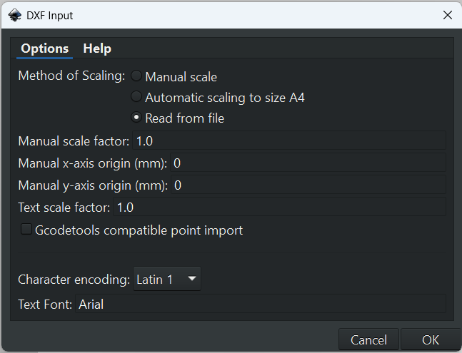
Figure 2. In the import dialog, set Method of Scaling to Read from file. Leave the rest alone.
If a second dialog appears about character encoding or text, just press OK — it is only reporting that text was interpreted.
Check the size before you cut anything. Measure your drawing in Inkscape (see Step 5) and confirm it matches the real part. If it came in at the wrong scale, delete it, reopen the DXF, and check the scaling setting above.
4
Fix the line width
A DXF stores lines as mathematical curves with almost no width. When Inkscape opens it, those lines can be invisible or hair-thin. The laser wants them thin too — hairline — but it needs to be able to see them.
Select everything: Ctrl+A (on a Mac, ⌘+A).
Open Object → Fill and Stroke…
In the dialog, choose the Stroke style tab.
Set Width to Hairline.
The Fill and Stroke dialog docks on the right of the window. If you cannot find it, it is the same dialog you will use in the next two steps.
Figure 3. Stroke style → Width → Hairline.
Why hairline? The laser follows the centre of the line it is given. A thick line gives it nothing useful to follow, and can make it fire twice. Hairline means "treat this as a path, not a shape".
5
Set the colours the laser reads
This is the step that matters most. UCP decides what to do with each line by its colour:
Redcut through RGB 255, 0, 0
Blueshallow cut / score RGB 0, 0, 255
Blackengrave (raster) RGB 0, 0, 0
To set a line's colour:
Select the lines you want to change. If the whole drawing came in as one group, Object → Ungroup first so you can select individual lines.
In Fill and Stroke…, open the Fill tab and click the X so the fill is set to No paint. A filled shape would be treated as an engrave, not a cut.
Open the Stroke paint tab. Choose the flat colour button (not gradient), then set the exact RGB values for the operation you want.
Confirm the line is 100% opaque. A semi-transparent line is a different colour as far as the laser is concerned.
No paint for fill. Cuts are paths, not filled shapes — a filled shape would engrave.
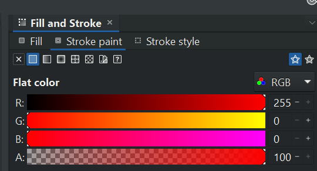
Pure red for cuts. Type the exact numbers: R 255, G 0, B 0.
For a shallow cut or score line, the same dialog but pure blue — R 0, G 0, B 255:
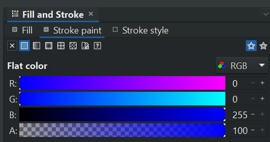
Figure 4. Blue scores instead of cutting through.
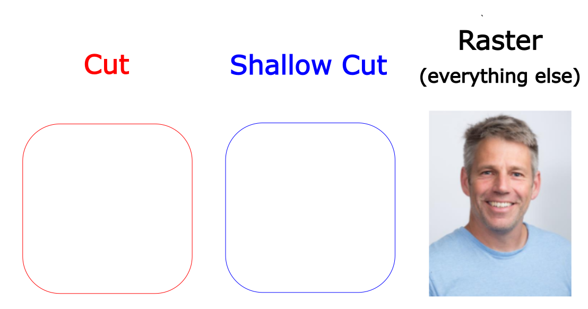
The three operations. Red cuts, blue scores, everything else rasters.
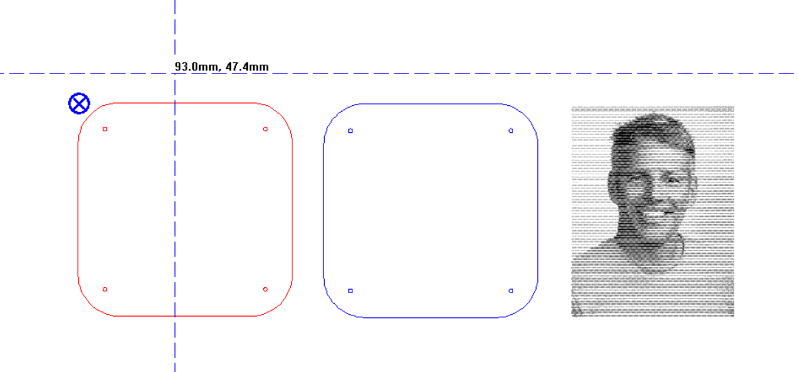
How UCP sees them. One file, three separate operations.
Zoom in and check. After recolouring, zoom into a corner of your drawing and confirm the lines really are pure red or pure blue — not dark red, not purple. If UCP later shows the wrong colours, come back here first: it is almost always this step.
6
Check the size and scale
Before you send anything to the laser, confirm your part is the size you designed and fits on the bed.
Use Object → Transform… or the selection tool's toolbar to read the width and height of your drawing in millimetres.
Compare against your Onshape sketch. If it is wrong, fix it here — it is much harder to correct inside UCP.
Keep everything inside 300 × 600 mm. Leave a margin at the edges so your part is not at the very corner of the sheet.
One habit worth having: draw a small rectangle around your whole drawing in a colour you are not using, and delete it once you have confirmed the size. It gives you something obvious to measure against.
7
Print the file to the laser
Inkscape sends the job to the laser through a normal print dialog — Inkscape thinks it is printing to a paper printer, and the laser driver takes over from there.
Press Ctrl+P (⌘+P on a Mac).
Choose the printer called VLS3.60/75.
Check the preview in the bottom left of the print window looks right, then click Print.
Clicking Print will not start the laser. It only sends the file to UCP. The machine does nothing until you press the green run button in Step 11, with the lid closed.
8
Find your job in UCP
UCP (the red icon in the taskbar) should open automatically and show your file. If it does not, click its icon in the taskbar to bring it up.
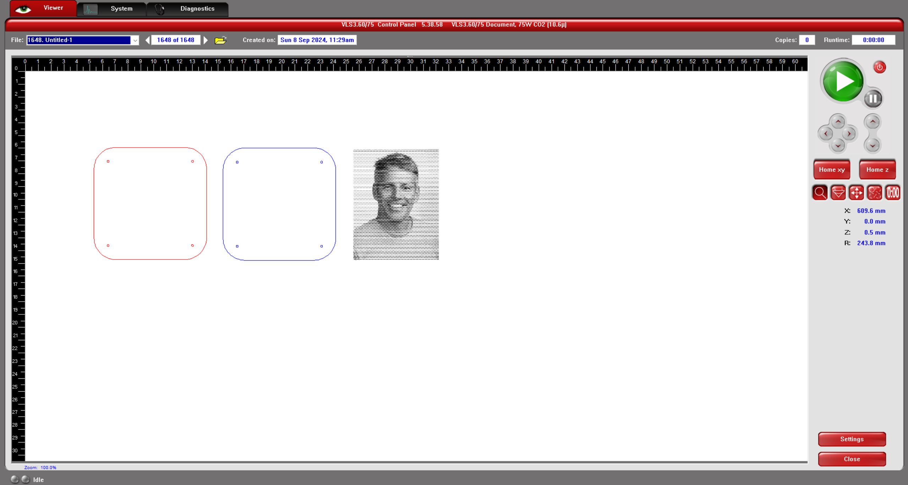
Figure 5. Your drawing arrives in UCP laid out on the bed. The white area represents the laser bed itself.
Confirm every operation arrived: your cuts red, your scores blue, your engraves black. Nothing missing.
If the file is missing or the colours are wrong: go back to Step 7 and print again, checking that the print preview looks correct and no error appears. Then re-check the line colours and opacity from Step 5. Those two causes cover almost every case.
9
Set the material and thickness
Open the settings menu at the bottom right of UCP. This is where you tell the laser what it is cutting.
Click the Materials Database tab at the top of the menu.
Find your material. The two you are most likely to use:
Click Apply to load the defaults for that material.
Figure 6. Pick the material, set the thickness, then Apply.
The stored settings are not always right. The whiteboards near each laser have more accurate power and speed settings for cutting wood and acrylic than the built-in database. Read the whiteboard and use its numbers.
10
Set the power and speed yourself
Because the database defaults may be off, set the cutting values by hand from the whiteboard:
Open the Manual Control tab of the settings dialog.
Click the Red colour row.
Set the power and speed for the laser you are using, from the whiteboard.
Click Set.
Click Apply.
Click OK to close the dialog.
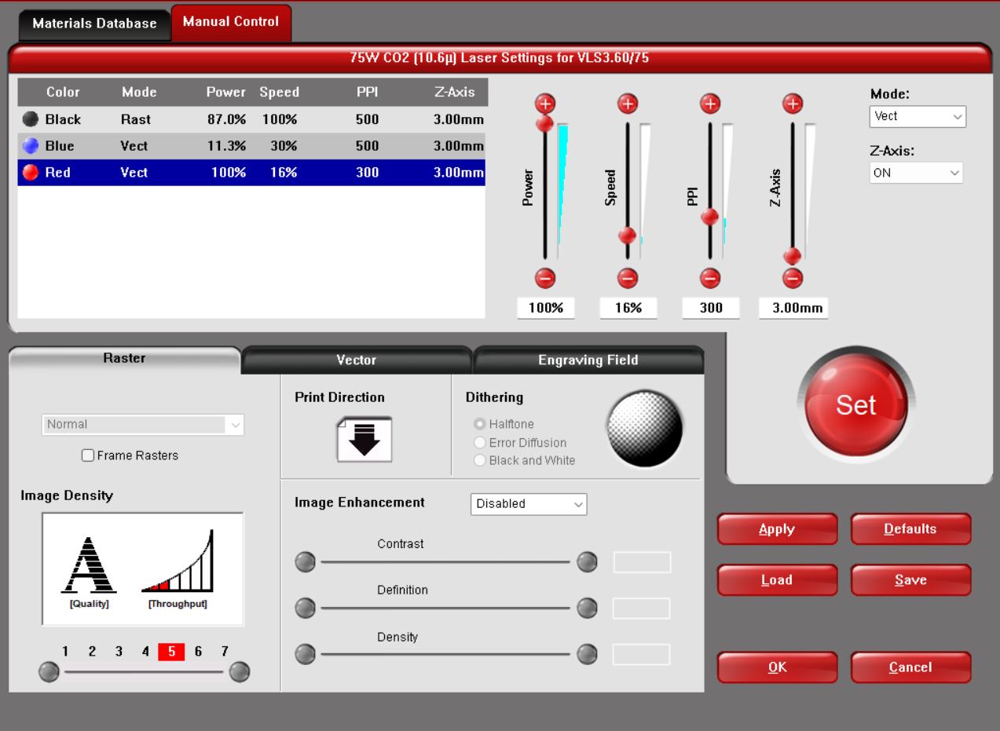
Figure 7. Manual Control: pick the colour, set power and speed, then Set → Apply → OK.
11
Position the job on the material
UCP's white canvas represents the laser bed, but it does not know where your sheet of material physically sits. You have to line the two up.
The trick is the Focus View tool, which shows where the laser head is and where your mouse is. Clicking on the canvas moves the head to that spot, and while the lid is open the laser projects a red dot straight down onto the material — so you can see exactly where a point in your drawing will land.
Click Focus View on the right middle of the screen. It shows the laser head position and the mouse position relative to the top-left corner of the bed.
Move the laser head to the spot on your material that you want to be the top-left corner of your cuts. You should see the red dot land there.
Your imported file has small handle nodes around it. Drag the file by a node so that its top-left corner sits on that point.
Or click the node, then click To Pointer in the bottom right to move the highlighted node straight to the laser head's current position.
Click near each corner of your cuts in Focus View, and watch the red dot. Every corner must be on the bed and on your material.
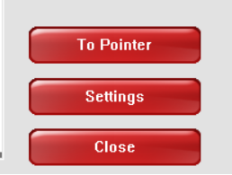
To Pointer. Sends the selected node to the laser head.
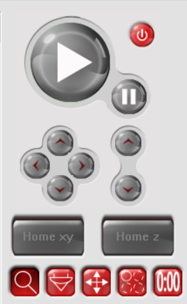
Movement and run controls. Arrows jog the head; green plays the job.
Check outward, not exactly. Bias your corner checks a few millimetres outside the cut, so you are confirming there is material around the part, not just underneath the line. Check that no corner is off the bed or over a hole in your material.
12
Focus the laser
If the laser is not focused on the surface of your material, it may not cut all the way through.
Take the focusing gauge from the left side of the laser.
Stand its black base on the material you are cutting.
Using the arrow buttons on the control panel at the front right of the laser, move the bed up or down until the laser head starts to knock the white part of the gauge to the side.
Remove the gauge.
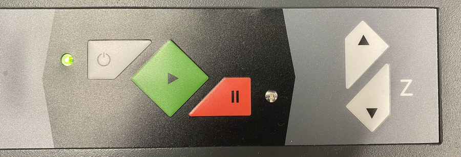
Figure 8. The arrow buttons move the bed up and down. The arrows indicate which way the bed moves when pressed.
Once per material, not once per cut. You only focus at the start of a session and whenever you change material thickness. Cutting several parts from the same sheet does not need re-focusing.
13
Start the cut
Close the lid. The laser will not run with it open, and it should not.
Back in UCP, click the green arrow (run button) at the upper right of the window.
Stay with the machine until the job finishes.
Never leave the laser unattended. Sometimes the laser sets your material on fire. There is a fire blanket on the side of each laser, and it works well — but only if you are standing there to notice and use it. The blanket will not deploy itself.
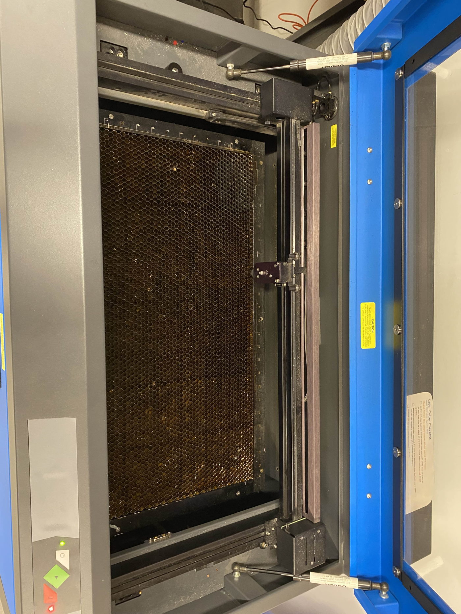
Figure 9. The honeycomb bed inside the laser. Close the lid before you start the job — the machine will not run with it open.
Questions people actually ask
Question
Answer
Why can't I leave the laser unattended?
Because sometimes the laser sets your material on fire. There is a fire blanket on the side of each laser, which works great if you are there to detect the fire. It will not deploy itself.
What if I need to cut something really thick or really big?
The laser across the street in Bray is more powerful and has a larger bed.
My drawing opened at the wrong size. What went wrong?
The DXF scaling. Re-open it and choose Read from file as the Method of Scaling, then measure again in Inkscape before printing.
My file isn't showing up in UCP.
Print again from Inkscape (Step 7) and check the print preview and any error message. Then verify the line colours and that opacity is 100% (Step 5).
The colours look right in Inkscape but wrong in UCP.
Almost always opacity. A line that is 90% red is not pure red. Set opacity to 100%.
Can I prepare files on my own laptop?
Yes. Install Inkscape at home, do Steps 1–10 there, and bring the DXF or SVG in. You still have to do Steps 11–13 at the machine.
Have a question that isn't here?
Come up to the staff desk at Nolop and an employee will be happy to help.
Words you'll see
DXF
The file format Onshape exports for laser cutting. It stores your drawing as lines and curves, without colour or width — which is why you fix those in Inkscape.
SVG
Inkscape's native format. Also accepted by UCP, and a good choice if you want to save a version with your colours already set.
Hairline
The thinnest possible stroke width. Tells the laser to follow the line rather than treat it as a shape.
Vector / raster
A vector is a path the laser follows — that is cutting and scoring. A raster is an image the laser sweeps back and forth like a printer — that is engraving.
Shallow cut / score
A cut that only marks the surface. Drawn in blue.
UCP
Universal Control Panel — the software that talks to the laser.
Focus
Setting the bed height so the laser's beam is sharpest at the surface of your material.
Raster
An engraving pass. Anything in your file that is not a red or blue line ends up here.
Where everything lives
What you want
Where to find it
Inkscape, free download
inkscape.org
Inkscape on the laser PC
The taskbar at the bottom of the screen
UCP on the laser PC
The red icon in the taskbar
Accurate power and speed settings
The whiteboards next to each laser — more accurate than the built-in materials database
Material
The Nolop store sells 3 mm plywood and acrylic precut to the bed size
Source and credit. This guide follows the Nolop Makerspace laser cutting guide (Tufts University), adapted for ENT-164 with Inkscape replacing Adobe Illustrator. The UCP screenshots are from that guide. Nolop guide contributors: Yufeng Wu, Jeremy Kanovsky, Brandon Stafford, Aiden Auretto, Sara Murillo. Licensed Creative Commons BY-SA.


 ENT-164 · Intro to Making — Laser cutting at Nolop with Inkscape · Beginner's guide · Fall 2026
ENT-164 · Intro to Making — Laser cutting at Nolop with Inkscape · Beginner's guide · Fall 2026